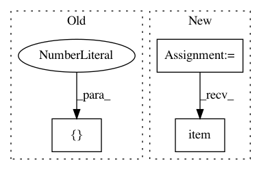

cbcc3f315c653706ceded6ba42f222616322a3f2,ch03/03_atari_gan.py,,,#,132
Before Change
dis_losses = []
iter_no = 0
true_labels_v = Variable(torch.FloatTensor([1.0] * BATCH_SIZE))
fake_labels_v = Variable(torch.FloatTensor([0.0] * BATCH_SIZE))
if args.cuda:
true_labels_v = true_labels_v.cuda()
After Change
dis_losses = []
iter_no = 0
true_labels_v = torch.ones(BATCH_SIZE, dtype=torch.float32, device=device)
fake_labels_v = torch.zeros(BATCH_SIZE, dtype=torch.float32, device=device)
for batch_v in iterate_batches(envs):
// generate extra fake samples, input is 4D: batch, filters, x, y
gen_input_v = torch.FloatTensor(BATCH_SIZE, LATENT_VECTOR_SIZE, 1, 1).normal_(0, 1).to(device)
batch_v = batch_v.to(device)
gen_output_v = net_gener(gen_input_v)
// train discriminator
dis_optimizer.zero_grad()
dis_output_true_v = net_discr(batch_v)
dis_output_fake_v = net_discr(gen_output_v.detach())
dis_loss = objective(dis_output_true_v, true_labels_v) + objective(dis_output_fake_v, fake_labels_v)
dis_loss.backward()
dis_optimizer.step()
dis_losses.append(dis_loss.item())
// train generator
gen_optimizer.zero_grad()
In pattern: SUPERPATTERN
Frequency: 3
Non-data size: 3
Instances
Project Name: PacktPublishing/Deep-Reinforcement-Learning-Hands-On
Commit Name: cbcc3f315c653706ceded6ba42f222616322a3f2
Time: 2018-04-25
Author: max.lapan@gmail.com
File Name: ch03/03_atari_gan.py
Class Name:
Method Name:
Project Name: PIQuIL/QuCumber
Commit Name: cfa828f6349317ce50a610cd31bb3dcf5e5ea211
Time: 2019-06-05
Author: emerali@users.noreply.github.com
File Name: qucumber/utils/training_statistics.py
Class Name:
Method Name: fidelity
Project Name: ClementPinard/FlowNetPytorch
Commit Name: d95f630a7b7f88621bc4abb4ac92692647f03781
Time: 2018-08-23
Author: clement.pinard@parrot.com
File Name: main.py
Class Name:
Method Name: validate